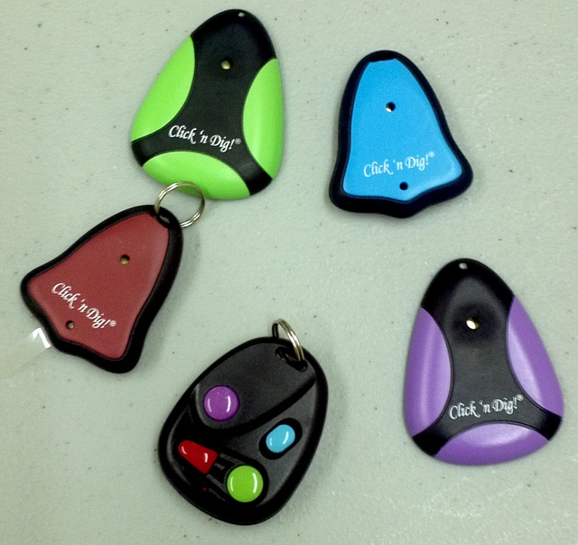
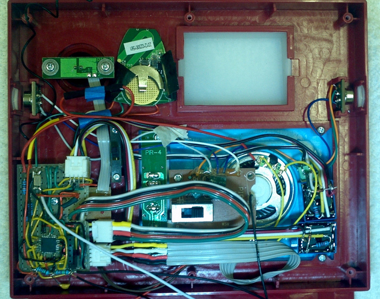
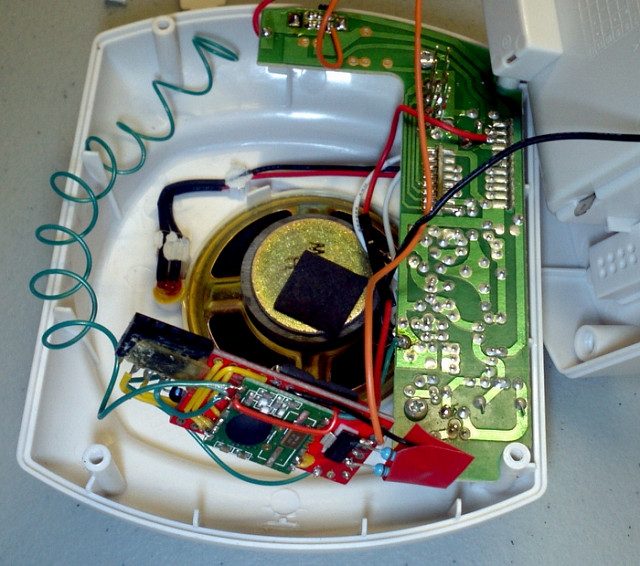
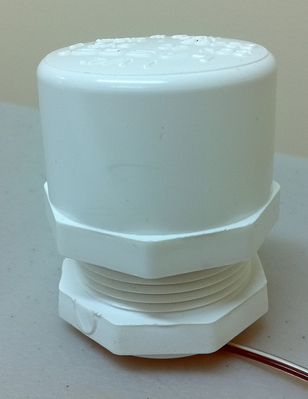
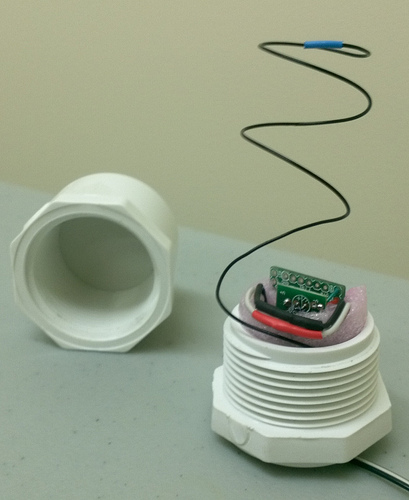
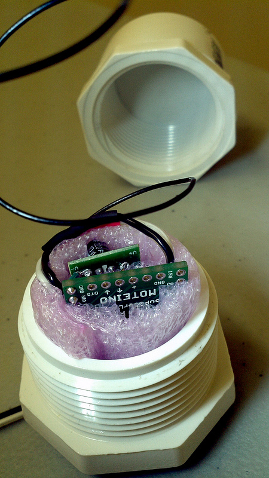
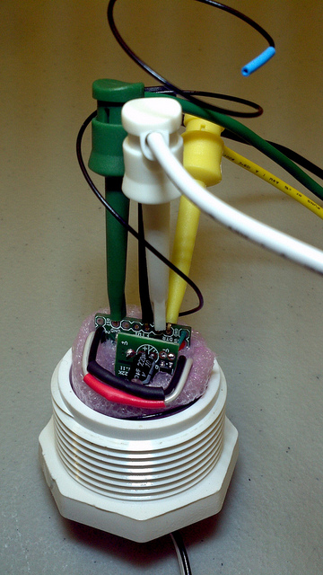
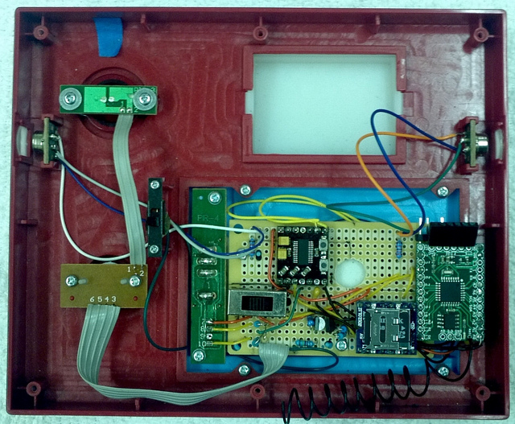
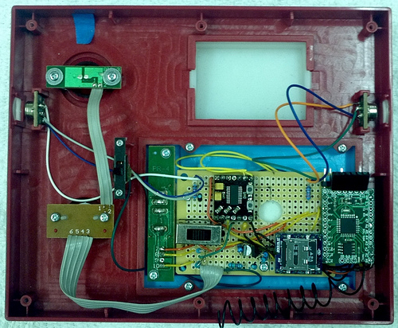

One system I have at my office is responsible for marshaling my attention appropriately.
There are two parts to that:
1) Having attention at all to marshal, and
2) putting it where it belongs, on demand.
What I mean by the first item is simply that I really need a cup of coffee to start thinking right in the morning. The problem is that without the coffee, I am highly prone to distraction, and I start to work on things before I can go make the coffee. Then I do bad things like make mistakes soldering, etc. When that happens, I am reminded of the rule, "have coffee before you do anything". So I get up and go to turn the coffee maker on. I have a Keurig B60. It takes a minute or so to heat the water up to coffee-making temperature. In the meantime, I go back, now trying to recover from the earlier mistakes, but ... I still haven't had coffee. When mistake number two happens, I am reminded that I never got up to hit the brew button and actually get coffee. The water by now has been hot for a while, and maybe it's not even morning anymore. But I eventually have the coffee.
The solution to this problem came out of the second item, which can be stated a different way: whatever my wife wants takes precedence. Now I don't mean that in a mean way at all - she is amazing, and does not do silly things like make mistakes while forgetting to have coffee. Left to my own devices, half the things would never get done. Chaos would ensue. It's a very good symbiosis.
Sometimes my wife comes to the office with our little daughter, a toddler. If you have a little one, and a car, you know the hassle it is to deal with the car seat, the diaper bag, bottles, and miscellaneous toys that keep the child from exploding into a teary mess at the slightest provocation. Getting in and out of the car can be involved, and a second person really makes it a lot easier. My wife said to me, "I need a way for you to know to come out and help when I arrive." No problem. "Just call me". Except it was a problem. My phone was off. Or I didn't hear it over some machinery I was running. Or I was in the back of the office, out of earshot. Or I left my ringer on silent. I needed a different solution.
I bought one of those key finder devices, which amounts to a little fob remote with a button to press, and a unit with a loud buzzer that you are supposed to attach to your cell phone or keys or dog or other item you are trying to locate.
I gave her the button fob and she could press it from inside the car, and I would hear the buzzer and come on out. Problem solved, except...
It never worked, not one time. The reason was the limited signal penetration through the building's outer wall. Worked great when I tested it inside... incorrect test conditions - must have been in the morning, before coffee. The product itself was great and worked quite well.
So then, I decided, I just needed to locate the receiver very close to the entrance, so that the unit would work (since I was not ready to give up on the idea yet, see lack of coffee problem). But then I needed something that would make a loud enough sound from the front area. The tiny piezo buzzers were loud, but not that loud. And I also thought, since this unit would be right by the entrance, why not get a thing that would make a noise when someone crossed the threshold too, so I would know when I had a visitor? Because a simple bell that hangs on the door is too old school, and prone to working reliably.
What I found to do the job was utterly ridiculous, but I indulged anyway. The Star Trek door chime from Thinkgeek:
http://www.thinkgeek.com/product/e9b8/This little unit has two PIR sensors, and will play three distinct sounds under various conditions. The "red alert" klaxon, the "swoosh" sound of the turbolift doors, and the boatswain's whistle. It's so silly but makes me laugh, and was relatively inexpensive.
The idea was to let it work normally, as it would detect someone crossing the threshold and play the "swoosh" sound. I wired in the remote receiver of the key finder, detected that signal via an ATMega chip, and then had it trigger the boatswain's whistle sound.
This was before I found Moteino, and in this case, being a prototype and all, but being space constrained, I elected to hand-solder to a TQFP packaged ATMega328P.
Never do this. You can see the bell-shaped circuit board at the top, that was the guts of the blue key finder receiver in the first picture. I pulled the signal off the transistor that fed the piezo buzzer (removed), and it worked quite well. The ATMega then triggered two relays. One that increased the volume by shorting a resistor out of the speaker circuit (this is the way they originally controlled the volume between two settings - with or without a resistor in series, low and high volume) and then by "pressing" the button that triggered the boatswain's whistle sound.
So that sound would mean, my wife has arrived. Problem solved, except...
It wasn't. The fob was small and easily left at home. The range was still pretty short through the building wall, so it only worked from the really close parking spots, which were sometimes already occupied when she arrived.
Time to abandon the fob idea. Needed something else. So I found the "GE 19209 Wireless Door Chime with Two Push Buttons", which claimed a 150-foot range, and was meant to transmit through a certain number of walls. It also had a larger number of distinct sounds, though with only two buttons, I really only could use two. Well, most of those sounds were all pretty irritating to me anyway, which I realize is a total matter of opinion. Swoosh!
So the obvious answer was to replace the fob situation with the new doorbell. (Of course the
real obvious answer was to just use the doorbell as-is, and just use the PIR door detector by itself, as it was designed. But what fun is that?) Since the doorbell came with two buttons, I could mount one on the outside of the door, and actually have a real doorbell, which I did not have before. The other button would just live in the car. But the new doorbell receiver was large and would not fit in the door chime case. Solution? Another ATmega with RFM12B, and a matching RFM12B in the door chime to receive that signal.
This is a shot of the interior of the doorbell receiver. It has a cheap Arduino clone board, an "Iduino". The RFM12B is directly attached, and there is a pair of resistors to create a voltage divider to monitor the battery level, as well as a voltage regulator for the Iduino and RFM12B. In the door chime of the previous picture, the RFM12B is not visible, as it is under the prototyping board, but you can see the coiled black wire going up the side, that is the antenna wire.
The theory was to set the two doorbell buttons to different sounds, and detect the speaker signal with the ATMega when either button was pressed. The two sounds were of markedly different durations, so no need to analyze the waveform to distinguish them - just go by the duration of the signal. Then send the info to the door chime, which would then play a different but appropriate sound. This actually worked. Problem solved, except...
It wasn't. This configuration worked well a few times, the range was adequate and it was fun. But the battery life of the button unit in the car was very, very short. Probably due to temperature cycling. Also, parking lot conditions prevented this from working all the time. A passing panel van in line of sight would just block the signal. Rainy weather seemed to shorten the range quite a bit as well. Not good enough yet. I mean, I especially needed it to work on the rainy days!
To solve the problem, enter
Moteino.
Those first two ATMega-based nodes were just built ad-hoc from stuff I had lying around. All that was patently awful, just done for prototyping one-off units like these. But I saw that this system was expanding (as well as incorporating other less-ridiculous node systems I have in place), and I had just found Moteino. So I ordered a bunch of those, thank you Felix!
The first one I put into a PVC capsule, watertight. I cannibalized a USB car charger and fed the Moteino 5 volts with that. That charger board was fed through an epoxy potted through hole in the PVC capsule, wired back to the 12 volts of the car. It is mounted in the front grille, which is pointed at the office entrance when you drive in. It broadcasts a few bytes every 10 seconds until it gets an ack from my doorbell unit, after which it dials back to once every ten minutes. (These values are configurable, but they've worked for me so far.) This unit removed the need to press a button, and implemented a retry-until-success paradigm. The doorbell unit will send a message to the door chime to play the right sound, when this signal is detected. Once "rung" the chime is reset by the doorbell not receiving the car's signal for more than twenty-one minutes (also configurable - but it means it misses two of the 10 minute pulses). The car node is similarly reset by not receiving an ack (it goes back to the 10 second interval on missed ack).
Some shots of the sender Moteino module:
 The electronic components are electrically insulated from each other, and immobilized and cushioned from shock by the pink foam. The antenna wire wraps in a coil around the maximum diameter of the inside of the capsule. It's all pretty small, so I elected to not put a header on the FTDI connections, but thankfully Felix made the plated through holes just the right size to accommodate micrograbbers, so I just use those to reflash when I have an update. I hadn't gotten the wireless update working on that one yet, but looking forward to that! (Removal from the car, fitting the micrograbbers, wiring up to a 12V source, all not complicated or difficult, but time consuming and unnecessary with Moteino.)
So, problem solved... except for one thing. The chime unit was not really loud enough where I could hear it from the back of the office, particularly if machinery was running. Enter Moteino number two, in a second Star Trek chime mounted in the back of the office. It behaves as the first, responds to the doorbell signal. Easy, and this time I did not need to hand solder a TQFP ATMega. (!)
But - I needed a little bit more. Fact is, I already had three things I wanted to be alerted to:
1) My wife's arrival
2) Someone ringing the physical doorbell
3) Someone entering the office by crossing the threshold.
But now that I wasn't using the other doorbell button in the car, I could mount that at the back door to the office, and I'd want a different sound for that, because I would not want to rush to the front door, only to have to then cross the entire office to get to the back. Unfortunately, the Star Trek chime had only three sounds built in, and frankly, the "red alert" sound was too long, loud, and annoying to be of much use. So really I had four conditions and two usable sounds. Well, I already had a Moteino in the second chime unit - maybe I could make some tones or something...
Ultimately, the sounds I could generate with the PWM signals were not sufficient. I was already using some tones for other systems in the office, and they were hard to tell apart - particularly before coffee. So the solution was to rip out the guts of the Star Trek chime, and replace it entirely with the Moteino, controlling a WTV020-SD-16P module, which can play 512 different sound files of my choosing. I had to make the Moteino take the inputs from the PIR detectors, and react to them. It had to also play appropriate sounds when receiving signals that originated from the car or either of the doorbell buttons. No problem. That module was still a little bit too low in volume so I added a PAM8803 amplifier. Done. Moteino was easy to connect and just worked. Now I can play as many sound files as I need for every condition I am monitoring in my office. My once-simple door chime has become a general-purpose annunciator system.
Here is a shot of the newer chime unit.
So much cleaner with Moteino. No relays, plenty of space for components. And with far increased function. The small unit at the bottom with the microSD card is the WTV020-SD-16P module. The SD card holds the sound files. The one drawback with this is that I do not have direct access to the SD card, so I have to open this unit up and get the SD card out to load new files on it, if I want to add sounds. But, I can live with that (until the day I can't, then we'll see). The module with the two micro push buttons is the amplifier. The Moteino is visible and has the coiled antenna coming out of the RFM12B on the reverse. The PIR sensors and switches, LEDs and speaker, are all original. The hardest part of this was to position that one large switch on the prototyping board so that it lined up correctly with the hole in the housing.
Just compare the two side-by-side. One, complex, crammed, inefficient on power, and difficult to assemble. The one with Moteino, clean, easy, and with far more utility.
So far I have just converted over the rear door chime to Moteino, which is the one I am closest to most of the time. I've waited to convert the front one, because I am going to use Moteino R4 with RFM69W, and use the RFM69HW in the car, for increased range. I will have to convert the rear chime to use RFM69W as well, but since I used Moteino R2, with the same footprint and pinouts, it will just be easy.
Enter Moteino number three. Another identical PVC-encapsulated node with a periodic transmit beacon. It is mounted in my own car. And although it works well, I am looking forward to the RFM69HW conversion, because it will mean my annunciator system will detect the car a little bit earlier. If my wife borrows my car on a given day, I will still get the signal that she has arrived. If it is me driving the car, the sound associated with my car's arrival will not be heard by me, since I am in the car - but here is the important part:
Enter Moteino number four. It lives in my Keurig B60, detailed in this post:
http://lowpowerlab.com/forum/index.php/topic,196.0.htmlIt gets the signal relayed from the doorbell receiver, and turns on as either car arrives. The water is typically hot enough just as I get to the machine, which is in the rear of the office, farthest from the entrance. It is ready for me to have a cup of coffee, by the time I get out of the car, into the office, and over to where the coffee maker is located. No more fuzzy thinking in the morning, ever again. This was the real reason for the Keurig conversion. I don't get to the office at any particular time, it can be anytime during the day, or not at all on a given day, depending on what I have going on. (There is the toddler effect - not the only effect, but a major one of them.) Use of a normal scheduler was not going to work in my situation.
I was considering having the coffee maker Moteino detect the presence of the coffee charge and actually brew the coffee, but as it is a single-cup brewer, I would have to remember to put the charge in the day before. That's probably not going to happen with any kind of reliability.
But now, the coffee maker can be turned on and shut off, and I can monitor how many cups of coffee I have each day. That's so I can correlate it with coding productivity, and be mindful of the too much coffee fall-off knee, which is a real effect. But also avoid too much time elapsing since the last cup of coffee.
Sailing "in the groove"...Also, the coffee maker used to sit there and keep the water heated all day long, just waiting for someone to hit that brew button. Now, I have it shut off after 5 minutes of inactivity. So, some energy saved too. I may add a scheduler (on a PC) to start the coffee machine up remotely in the afternoon, and have the door chime/office annunciator play a sound when the water is hot (and then another sound when I fail to act on the first one because I am unhealthily focused on a computer screen). Maybe a "five more minutes" button served from the office webserver? For now though, if I leave for lunch, it will turn on when I return, so that works.
I added to the system some IP cameras, which are triggered when the PIR sensors are tripped at either door. I also get an email when that occurs. A sound will play when I get an email, so it is a comforting sequence of sounds each morning. Swoosh, then the sound of the coffee brewing, then a moment later a soft sound indicating that the IP cams have uploaded some images to my FTP site and emailed them to me as well.
There are many other things I am looking forward to adding to this system. Moteino five and six will replace the original prototype nodes in the doorbell receiver and the front door chime. There will be the Moteino R4 with RFM69HW conversions for the two car nodes. My water-distiller, mentioned in a different post (
http://lowpowerlab.com/forum/index.php/topic,188.0.html), already triggers alarms at key points in its process. I am slowly converting all of its sensor nodes to Moteino (right now it is all ATMega, but home-grown prototypes, probably around ten of them, no two the same. But, I will leave those for future posts. Moteino is just excellent, it is a great facilitator of
just about anything you can think of.
And that is how my wife caused a very useful attention marshaling system to come into existence. As always, I am very grateful to her.